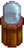

Die Insel-Außenstelle ist ein Zelt welches als Feldbüro dient und sich im Norden der Ingwerinsel befindet. Sie bleibt leer, bis Professor Schnecke aus einer Höhle bei der Ausgrabungsstätte befreit wurde. Danach können dort auf der Insel gefundene Fossilien gespendet werden. Als Belohnung für jedes vollendete Fossil erhält der Spieler Goldene Walnüsse.
Man kann Fossilien oder mumifizierte Artefakte spenden, mit denen die sterblichen Überreste von vier Kreaturen rekonstruiert werden können. Für einige Skelette werden bestimmte Fossilien mehrfach benötigt.
Der Spieler kann einen Hinweis auf den Standort eines Spendengegenstands erhalten, indem er die Spendenoberfläche verwendet und "Tipp" auswählt.
Für das Vervollständigen der Schlangensammlung wird der Spieler mit 3 goldenen Walnüssen und einem Mangosprössling belohnt.
Für das Spenden des Mummifizierten Froschs wird der Spieler mit 1 goldenen Walnuss belohnt.
Für das Spenden der Mummfizierten Fledermaus wird der Spieler mit 1 goldenen Walnuss belohnt.
Wenn alle vier Sammlungen vervollständigt und beide Umfragen richtig beantwortet wurden, erhält der Spieler in einer Cutszene das  Straußenbrutkasten Rezept.
Wenn beide Insel-Umfragen richtig beantwortet wurden bekommt der Spieler 1 goldene Walnuss.